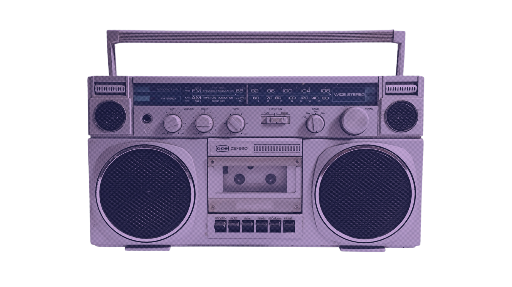

Our website plans to share with you the nature of a specific theoretical couple pairing (also known as "Byler"), derived from a TV show titled "Stranger Things", through music and all of its elements: melody, lyrics, tempo, and even just first-hand vibes! Whether it be modern music that shares similar sentiments and heartfelt feelings of the characters, or songs that stay true to the show's timeline---hitting fans in their feels of nostalgia or immersion into the fictional universe, we are sure to handpick only the best of the best that will surely keep you hooked for more. We have been long time avid fans of the television show, as well as music geeks, which brought us to the notion to combine our interests into a project idea that would be bound to constantly fuel us with productivity and dedication in completing the project up until our last quarter.